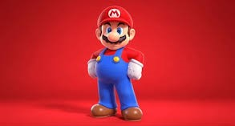

Mario
The Legendary Hero of the Mushroom Kingdom

🏰 Universe
Super Mario Bros
👤 Role
Hero / Plumber
🧬 Species
Human
⚡ Power Level
⭐⭐⭐⭐☆
📖 Backstory
Mario is a friendly Italian plumber who lives in the Mushroom Kingdom. He originally came from Brooklyn, New York, and arrived in this magical world through a mysterious pipe. Since then, he has become a trusted hero, often rescuing Princess Peach from Bowser.
Wearing his red cap, blue overalls, and known for his amazing jumps, Mario goes on many adventures. His bravery, determination, and cheerful attitude make him one of the most loved heroes in gaming.
🌟 Special Abilities
🍄 Super Mushroom: Grows larger and stronger
🔥 Fire Flower: Throws bouncing fireballs
⭐Super Star: Becomes invincible temporarily
🦝Super Leaf: Can fly with raccoon tail
🎮 First Appearance
Game: Donkey Kong (1981)
Console: Arcade
Console: Arcade
😊 Personality Traits
Brave and courageous
Athletic and agile
Loyal to friends
Never gives up
👨👩👧👦 Relationships
Luigi: His younger twin brother and trusted partner in adventure.
Princess Peach: The princess he frequently rescues and close friend.
Yoshi: His loyal dinosaur companion.
Toad: Faithful retainer of the Mushroom Kingdom.
Console: His arch-nemesis who constantly threatens the kingdom.